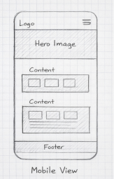
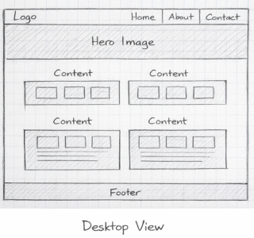

Explore Myrtle Beach
This name was chosen because the website focuses on highlighting attractions, activities, and important information about Myrtle Beach for visitors and potential business members. It clearly communicates the purpose of discovery and tourism.
The purpose of this website is to promote Myrtle Beach by providing visitors with information about local attractions, events, dining, and business opportunities. It also serves as a resource for individuals interested in joining the Chamber of Commerce.

The mobile layout stacks content vertically with a simple navigation menu, hero image, and content sections for easy scrolling.

The desktop layout expands into multiple columns with a navigation bar at the top, a hero section, and content arranged in a grid for better use of space.